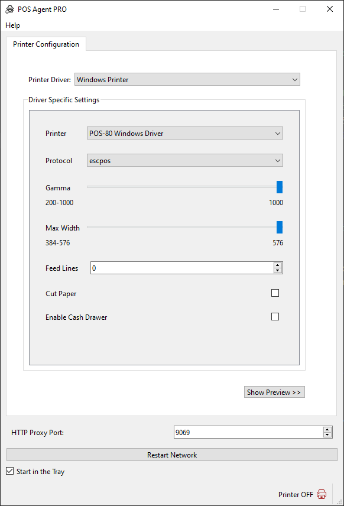
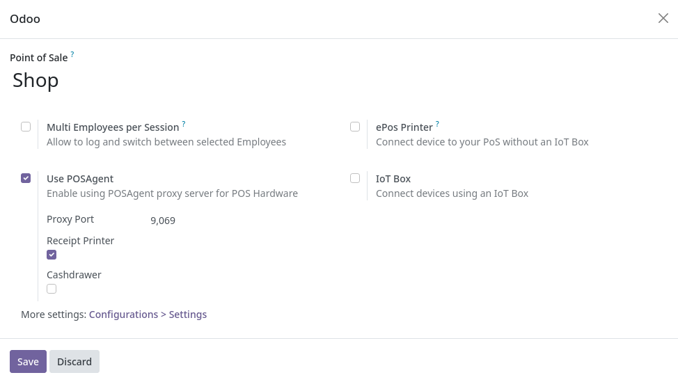

PosAgent PRO support for Odoo Community
What is POSAgent
POSAgent is a standalone, Desktop (Microsoft Windows currently) application that allows direct receipt print with ESC/POS thermal printers and enables Cash Drawer support for Odoo Community Edition.
This module allows you to use the POSAgent desktop client.
Where can I get POSAgent
From it's GitHub page, currently we have Windows 10/11 x64 versions available for download, copy and paste the link below:
https://dieg0-a.github.io/posagent-home/
Try it for free!
What is Currently supported
- Windows 10/11
- Thermal ESC/POS Printers (Windows raw printer driver) mainly USB printers
- Any printer with a Windows driver via the system printer driver
- Cash Drawers (currently ESCPOS only with the raw driver)
What is currently NOT supported but will be supported soon
- STAR Printers
- Linux version
- Older Windows Versions/32 bit
- Electronic Scales
- More printer drivers (Windows serial port, TCP/IP (network))
- Text mode (this would result in much better print quality), currently Odoo sends an image file to the proxy
Is this program free?
Yes, if you find this module useful you can support us on the project pageFeatures
- Very fast and lightweight, made in native C++
- Very easy to set up, you only need to configure it once and it'll remember your settings and printer
- Silent, unintrusive, can run and start in the system tray
- Now Open Source
Basic Usage for Windows
Interface is pretty self explanatory, select a printer driver in the upper dropdown menu then adjust the settings below
Setting up Odoo
Example for Odoo 17
Enable it in your POS Settings page, for example:
If everything went well then you should see the following icons in your POS interface:
And that's all there is to the configuration process, you'll now be able to print directly to your ESC/POS printer and use the cash drawer.